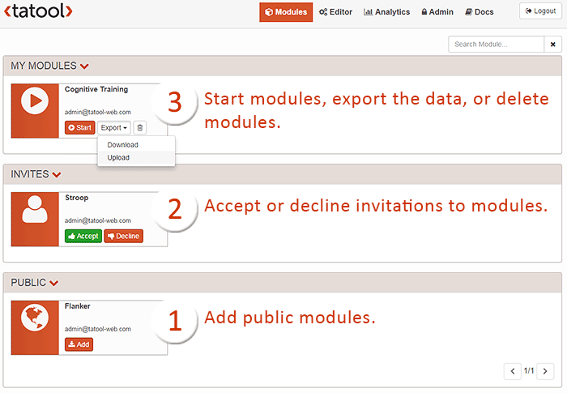

Never run an experiment with the same user login on different computers, as this could lead to corrupt data. Make sure to read the section about how to publish your modules on the next page.
In Tatool, a Module groups multiple elements so that they can be executed in sequence. For example, a module for an experiment could comprise instructions, a countdown, some practice trials, and, finally, the experimental trials.
On the tab Modules, users can add publicly available modules by clicking on the Add button (see 1 in the Figure below). Researchers can also decide to make their modules available to a specified sample of users only. In this case, they will invite users to add their module. Users can either Accept the invitation and thereby add the module, or Decline the invitation (2). Once a public module is added or the invitation for a private module is accepted, it'll turn up in My Modules (3), where it can be run by clicking on Start. Depending on the settings the researcher chose for the module, the user can download and/or upload the data. Finally, by clicking on the recycle bin icon, users can delete the module. Note that data that have already been uploaded to Analytics won't be affected by deleting the module.
Never run an experiment with the same user login on different computers, as this could lead to corrupt data. Make sure to read the section about how to publish your modules on the next page.

Screenshot of the Modules tab